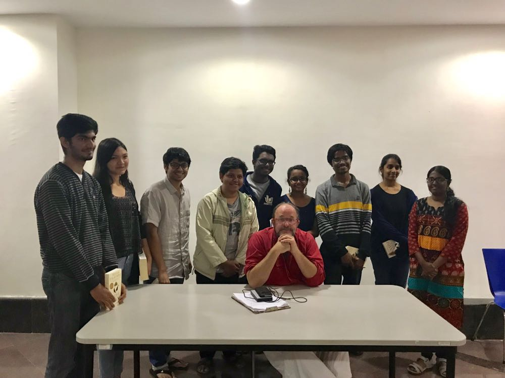
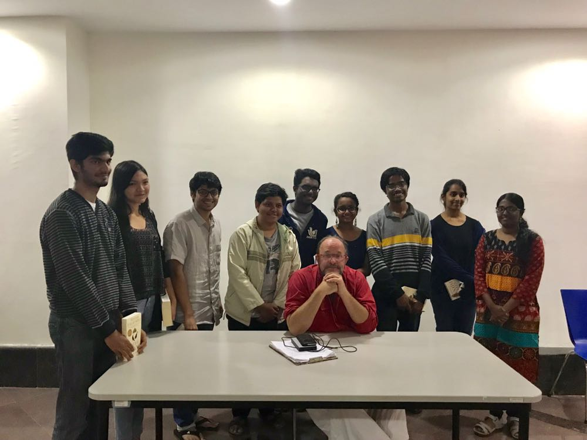

")


CSI and Treasure Hunt
Crime Scene Investigation, or CSI as it is commonly referred to happens to be the flagship event of the Lit Club, as well as that of Karavaan, the Annual Fest of IISERP. Ask the Karavaan honchos, the people on the ground, and they'll tell you the same thing: CSI is that one event that sees maximum participation among all the club-organised events that are held. The premise is simple enough; it's a talkative murder mystery, a la carte Agatha Christie, with a bunch of suspects-cum-witnesses on the scene. The official description, as per the Karavaan site is as follows:
" A sordid crime's gone under and a poor soul stands dispatched to the underworld under suspicious circumstances. Meanwhile the bumbling local force have drawn a blank in their investigation. So it's upto you to don your trench coat, slip on your cap and play saviour. Featuring the armchair detective in its finest iteration, interrogate a whole menagerie of witnesses and suspects, unearth evidence, and review and counter-review dozens of facts as you sleuth your way towards unravelling the web of deceit that encompasses the truth. The game's afoot!"
What that description doesn't tell you, is how much fun it is to organise and build CSI. It's one-month of creative madness and organised chaos. Narrative and character arcs arise from the background static and are taken down ruthlessly, many times over until the entire murderous plot stands honed to bloody perfection. Midnight reveries, late-night stakeouts, crazy-last-minute brainstorms, surprise treats, everything's up for the reckoning and all are fair game.
The Treasure Hunt is our other flagship event, held in the Spring Semester each year. A relatively young event, it has nonetheless gained a lot of traction in its year of inception, with praise coming in from several quarters that "this was the best treasure hunt held till date,period". Keeping that in mind, we intend to carry on that winning streak, and shape it up for further evolution. As with CSI, this requires concerted efforts of all involved to pull off, and like CSI, the sheer unadulterated joy of having participants run into the ground is more than worth it.
Poetry Nights
The poetry reading sessions at IISER Pune are a true celebration of the diversity of poetic talent on campus. These sessions, held in the fashion of Dead Poets Society, usually start at nine in the night and go on till four in the morning. There is freedom to present original work or work you admire. Poets sit in a circle, often in the shade of a tree or out in the open. The Lit-Club strives to generate the cult-like ambience that is the signature of contemplative poetry in general.
Throughout the night, ideas flow as each person presents one lucid piece after another. Quite like the movements of a sonata, the poems add to each others content, enforcing or invalidating feelings previously voiced. There is stimulating conversation about style, about content and about history.
Whether you enjoy Tagore in his native Bengali or Urdu shayari, you will find likeminded company. Whether you appreciate Tennyson or Button Poetry, you will be welcomed. Whether you enjoy discussing literary style or simply have fun talking about the nature of Life, the Universe and Everything, the Lit-Club poetry reading sessions are for you.
The Hemingway Memorial Debate
The Hemingway Memorial Debate was conceptualised as a result of a desire for introducing debate culture to IISER Pune. As an institute with diverse talent, IISER-P has a galaxy of eloquent speakers which include both professors and students. The Lit Club, with this annual debate, aims to harness this talent for stirring up some conversation on the important issues of our times - both scientific and social.
Ernest Hemingway was an American author and Nobel Prize winner in Literature whose work is widely considered to be the epitome of brevity and clarity: the primary qualities required of a good argument. The Lit Club takes significant inspiration from his 'straightforward prose, his spare dialogue, and his predilection for understatement'.
Introducing to IISER Pune, the motion:
This house believes that Sci Hub is aboon to science method and its dissemination.
The motion of the First Hemingway Memorial Debate as stated above is a result of the ongoing national and international discussion on the pros and cons of the websites like Sci Hub. Wikipedia, an objective source states that:
" Sci-Hub is a website with over 64.5 million academic papers and articles available for direct download. It bypasses publisher paywalls by allowing access through educational institution proxies. Sci-Hub stores papers in its own repository, and additionally the papers downloaded by Sci-Hub are also stored in Library Genesis (LibGen)."
While the answer to whether such websites are “improving” the condition of the global community of science students and scientists might seem obvious to a lot of people, their recent defeat in the court of law against Elsevier publishing and various articles from major media outlets calling for their banishment are indications that the discourse requires inputs from nuanced thinkers and debaters directly affected by the success or failure of these websites.
Which is why the Lit Club at IISER Pune brings to you a debate on one of the most controversial issues in science publishing with a wide array of scientists and science students from across scientific disciplines and academic backgrounds.
Other Events
 



We also host other events such as the occasional book-discussion session, talks held by various faculty on literary topics as well as a few talks co-hosted with the HSS Department of IISER Pune. A prime example of the latter was a performance by the noted author, William Dalrymple and Vidya Shah, held in the CV Raman Auditorium, which we had the fortune of hosting in conjugation with SPICMACAY and the HSS Dept.
Other than this, we also hold two other events in addition to CSI during Karavaan, namely JAM and Whirlwind Poetry, IISERP's very own Poetry Slam.